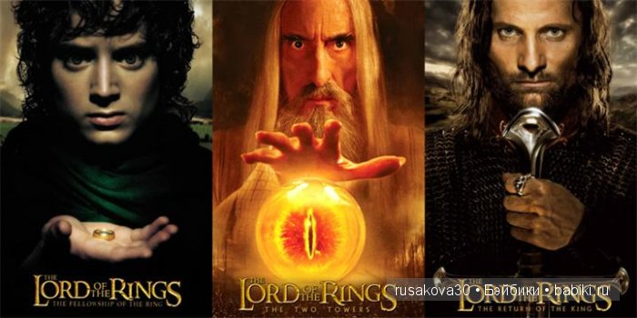

Lord of the rings trilogy

Описание
Кинотрилогия «Властели́н коле́ц» (англ. The Lord of the Rings; 2001—2003) — снятая режиссёром Питером Джексоном серия из трёх связанных единым сюжетом кинофильмов, представляющая собой экранизацию романа Дж. Р. Р. Толкина «Властелин колец».
Съемки
«Властелин колец» является одним из самых крупных проектов в истории кино. Его реализация заняла восемь лет; все три фильма были сняты одновременно в Новой Зеландии, родной стране Джексона. У каждого из фильмов трилогии есть специальная расширенная версия, выпущенная на DVD спустя год после выхода соответствующей театральной версии. Фильмы следуют за основной сюжетной линией книги, но опускают некоторые существенные элементы повествования, включают дополнения и отклонения от исходного материала.
© Дж. Р. Р. Толкин